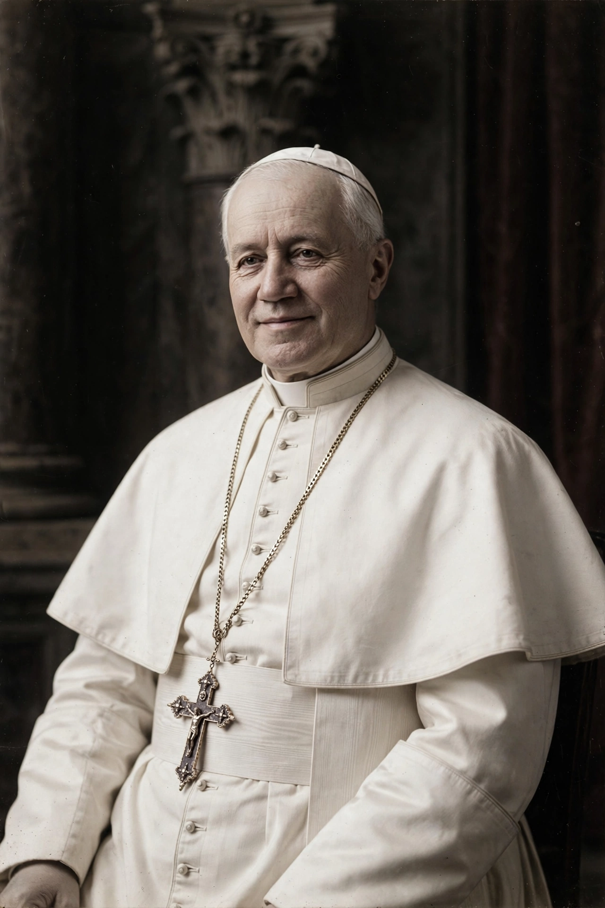

Pope Pius X (Italian: Pio X; born Giuseppe Melchiorre Sarto; 2 June 1835 – 20 August 1914) was head of the Catholic Church from 4 August 1903 until his death in August 1914. He is known for vigorously opposing modernist interpretations of Catholic doctrine and for promoting liturgical reforms and scholastic theology.
Born to a poor family in Riese, Veneto, he was ordained in 1858, became Bishop of Mantua in 1884, Patriarch of Venice in 1893, and cardinal.
His motto was "Instaurare Omnia in Christo" — to restore all things in Christ. He lowered the age for First Communion to seven, encouraged frequent Communion, reformed the breviary, promoted Gregorian chant, codified canon law (completed after his death in 1917), and reorganised the Roman Curia.
In encyclicals Lamentabili sane exitu and Pascendi Dominici gregis (1907), he condemned Modernism as the "synthesis of all heresies" and instituted an anti-modernist oath.
He died shortly after the outbreak of World War I and was canonised by Pius XII in 1954. The Society of Saint Pius X, founded in 1970, takes his name.
See also: Pope Pius IX, Pope Pius XII